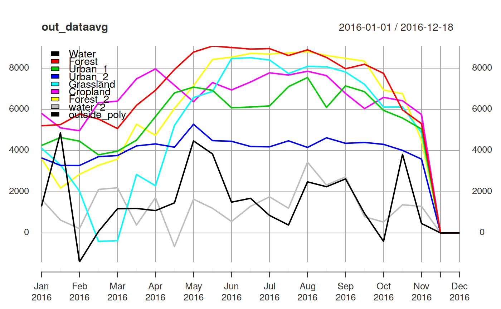

function used to extract time series data from rts files created by MODIStsp on spatial locations provided in the form of "R" spatial objects (SpatialPoints, SpatialPolygons, etc.)
MODIStsp_extract(in_rts, sp_object, start_date = NULL, end_date = NULL, id_field = NULL, FUN = "mean", out_format = "xts", small = TRUE, small_method = "centroids", na.rm = TRUE, verbose = FALSE)
| in_rts | A |
|---|---|
| sp_object | "sp" object OR name of an ESRI shapefile specifying the "positions" from which data has to be extracted.
|
| start_date | object of class |
| end_date | object of class |
| id_field |
|
| FUN | function to summarize the values (e.g. mean) on polygon data frames. The function should take a single numeric vector as argument and return a single value (e.g. mean, min or max), and accept a na.rm argument. Thus, standard R functions not including an na.rm argument must be wrapped as in this example: fun=function(x,...)length(x). Defaults to "mean" |
| out_format |
|
| small |
|
| small_method |
|
| na.rm |
|
| verbose |
|
data.frame or xts object. Each column of data corresponds to one point or one polygon, each row to a date.
The function takes as input a RasterStack object containing time information
in the "z" attribute (set by raster::setZ), a starting and ending date
and a standard "R" spatial object, and returns the time series for the spatial locations
specified in the spatial object in the form of a "R" xts object OR a plain data.frame
with a "date" column in first position.
If the input spatial object is a "point" or "line" one, the output object
contains one column for each specified point, or for each cell intersecting
the line, and one line for each date. If the input spatial object is a "polygon"
one, the output object contains one column for each polygon, containing values
obtained applying the function specified as the FUN argument over all pixels
belonging to the polygon, and one line for each date.
License: GPL 3.0
# Extract average and standard deviation values from a rts object created by # MODIStsp for each polygon of a shapefile, for each date in the period # between 2001-01-01 and 2014-12-31 # The example uses tif files in testdata/VI_16Days_500m_v6 to build # a MODIStsp rasterStack corresponding to the 2016 time series of the NDVI index # over the Como Lake (Italy). It then extracts data on polygons corresponding # to different land cover classes saved in testdata/extract_polys.shp # First, prepare the test dataset. # __NOTE__ To avoid redownloading, here we copy some test data from MODIStsp # installation folder to tempdir and use it to create a test time series. test_folder <- system.file("testdata/VI_16Days_500m_v6/NDVI", package = "MODIStsp") dir.create(file.path(tempdir(), "MODIStsp/VI_16Days_500m_v6/NDVI/"), showWarnings = FALSE, recursive = TRUE) file.copy(list.files(test_folder, full.names = TRUE), file.path(tempdir(), "MODIStsp/VI_16Days_500m_v6/NDVI/"))#> [1] FALSE FALSE FALSE FALSE FALSE FALSE FALSE FALSE FALSE FALSE FALSE FALSE #> [13] FALSE FALSE FALSE FALSE FALSE FALSE FALSE FALSE FALSE FALSE FALSEopts_file <- system.file("testdata/test_extract.json", package = "MODIStsp") MODIStsp(options_file = opts_file, gui = FALSE, verbose = FALSE) # Now load the MODIStsp stack: This is a MODIS NDVI time series ranging between # 2016-01-01 and 2016-12-18 # __NOTE__: MODIStsp rasterStack files are always saved in the "Time_Series/RData" # subfolder of your main output folder - see http://lbusett.github.io/MODIStsp/articles/output.html) # Specify the filename of the RData RasterStack of interest stack_file <- file.path(tempdir(), "MODIStsp/VI_16Days_500m_v6/Time_Series/RData/Terra/NDVI", "MOD13A1_NDVI_1_2016_353_2016_RData.RData") basename(stack_file)#> [1] "MOD13A1_NDVI_1_2016_353_2016_RData.RData"ts_data <- get(load(stack_file)) ts_data#> class : RasterStack #> dimensions : 122, 65, 7930, 23 (nrow, ncol, ncell, nlayers) #> resolution : 463.3127, 463.3127 (x, y) #> extent : 711648.3, 741763.7, 5076054, 5132578 (xmin, xmax, ymin, ymax) #> coord. ref. : +proj=sinu +lon_0=0 +x_0=0 +y_0=0 +a=6371007.181 +b=6371007.181 +units=m +no_defs #> names : MOD13A1_NDVI_2016_001, MOD13A1_NDVI_2016_017, MOD13A1_NDVI_2016_033, MOD13A1_NDVI_2016_049, MOD13A1_NDVI_2016_065, MOD13A1_NDVI_2016_081, MOD13A1_NDVI_2016_097, MOD13A1_NDVI_2016_113, MOD13A1_NDVI_2016_129, MOD13A1_NDVI_2016_145, MOD13A1_NDVI_2016_161, MOD13A1_NDVI_2016_177, MOD13A1_NDVI_2016_193, MOD13A1_NDVI_2016_209, MOD13A1_NDVI_2016_225, ... #> time : 2016-01-01 - 2016-12-18 (range) #># Now load a shapefile containing polygons from which we want to extract data polygons <- rgdal::readOGR(system.file("testdata/extract_polys.shp", package = "MODIStsp"), verbose = FALSE) polygons#> class : SpatialPolygonsDataFrame #> features : 10 #> extent : 9.248174, 9.526815, 45.91182, 46.18547 (xmin, xmax, ymin, ymax) #> coord. ref. : +proj=longlat +datum=WGS84 +no_defs +ellps=WGS84 +towgs84=0,0,0 #> variables : 2 #> names : id, lc_type #> min values : 1, Cropland #> max values : 9, water_2# Finally, extract the average values for each polygon and date and plot the # results out_dataavg <- suppressMessages(MODIStsp_extract(ts_data, polygons, id_field = "lc_type", small = FALSE))#> Warning: Some features of the spatial object are outside or partially outside #> the extent of the input RasterStack ! Output for features outside RasterStack extent #> will be set to NA. Outputs for features only partially inside will be retrieved #> using only the available pixels !head(out_dataavg)#> Water Forest Urban_1 Urban_2 Grassland Cropland Forest_2 #> 2016-01-01 1286.000 5205.000 4249 3645.444 4118.6667 5810.769 3617.222 #> 2016-01-17 4863.333 5264.333 4636 3279.889 3305.1667 5104.769 2183.111 #> 2016-02-02 -1408.000 5773.667 4458 3276.111 2037.5000 4964.385 2849.444 #> 2016-02-18 69.680 5532.667 3795 3705.333 -409.4000 6325.692 3286.222 #> 2016-03-05 1176.000 5070.000 3972 3759.333 -374.6667 6402.231 3586.556 #> 2016-03-21 1191.143 6197.333 4506 4226.889 2841.0000 7483.077 5281.000 #> water_2 outside_poly #> 2016-01-01 1637.2500 NA #> 2016-01-17 624.5714 NA #> 2016-02-02 207.5714 NA #> 2016-02-18 2113.1000 NA #> 2016-03-05 2195.0000 NA #> 2016-03-21 383.2857 NAplot(out_dataavg, legend.loc = "topleft")# use a different summarization function out_datasd <- MODIStsp_extract(ts_data, polygons, id_field = "lc_type", FUN = "sd", small = FALSE)#> Warning: Some features of the spatial object are outside or partially outside #> the extent of the input RasterStack ! Output for features outside RasterStack extent #> will be set to NA. Outputs for features only partially inside will be retrieved #> using only the available pixels !head(out_datasd)#> Water Forest Urban_1 Urban_2 Grassland Cropland Forest_2 #> 2016-01-01 1527.253 284.0563 NA 828.2035 287.84348 721.1267 2916.850 #> 2016-01-17 3596.167 166.4582 NA 507.4922 832.90081 398.7688 2065.297 #> 2016-02-02 NA 403.2001 NA 588.9146 1438.27713 408.5904 1726.775 #> 2016-02-18 772.163 451.7592 NA 1031.4413 36.09432 418.1476 2281.668 #> 2016-03-05 NA 315.2332 NA 800.5960 147.25850 606.2157 2668.058 #> 2016-03-21 1804.779 466.4990 NA 1025.6862 1016.45128 584.3801 2834.513 #> water_2 outside_poly #> 2016-01-01 3695.234 NA #> 2016-01-17 1178.930 NA #> 2016-02-02 1634.258 NA #> 2016-02-18 2669.741 NA #> 2016-03-05 3230.628 NA #> 2016-03-21 1533.839 NA# (See also http://lbusett.github.io/MODIStsp/articles/Analyze.html for a # worked-out example)